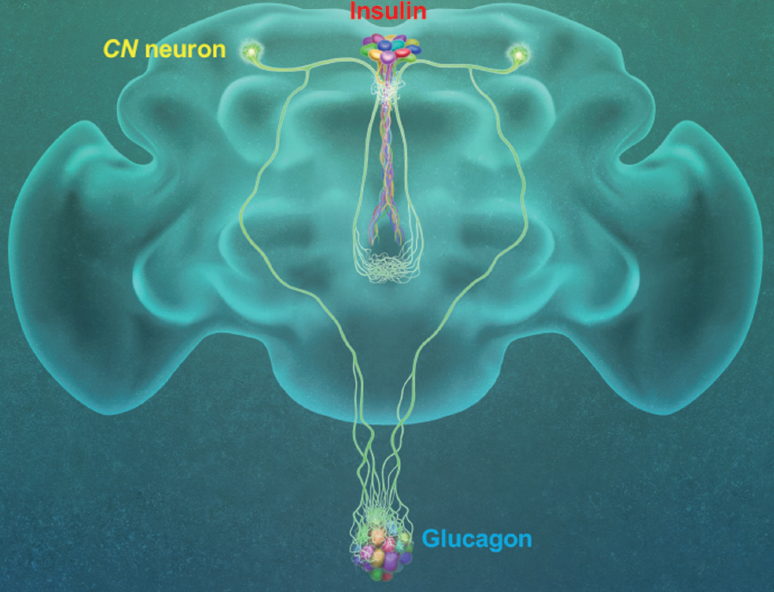

Report by Subjects
Report by Subjects
KAIST RESEARCH ACHIEVEMENTS
A glucose-excited neuron pair regulates insulin and
glucagon in Drosophila
Biological Sciences Greg Seong-Bae Suh
Summary
When animals consume food, the levels of glucose in their body increase; this excites the CN neuron, which fires the simultaneous signals to stimulate insulin and inhibit glucagon secretion, thereby maintaining the appropriate balance between the hormones and sugar in the blood. The researchers were able to see this happening in the brain in real time by using a combination of cutting-edge fluorescent calcium imaging technology, as well as measuring hormone and sugar levels and applying highly sophisticated molecular genetic techniques. When animals were not fed, however, the researchers observed a reduction in the activity of CN neuron, a reduction in insulin secretion and an increase in glucagon secretion. These findings indicate that these key hormones are under the direct control of the glucose-sensing neuron. Furthermore, when they silenced the CN neuron rendering dysfunctional CN neuron in animals, these animals experienced an imbalance, resulting in hyperglycemia – high levels of sugars in the blood, similar to what is observed in diabetes in humans. This further suggests that the CN neuron is critical to maintaining glucose homeostasis in animals. This is a significant step forward in the fields of both neurobiology and endocrinology. This work lays the foundation for translational research to better understand how this delicate regulatory process is affected by diabetes, obesity, excessive nutrition and diets high in sugar.
Background (objectives)
Why do the symptoms of diabetes get worse when the patients are under stress? It has been established clinically that the brain has significant effects on alleviating the pathophysiology of diabetes and maintaining glucose homeostasis in the body, but the mechanism by which the brain is able to do so is not clear to this date. A research team headed by Professor Greg Seong-Bae Suh at KAIST have used fruit flies as a model to uncover the mechanism by which glucose-excited neurons in the brain regulate the activities of two key endocrine axes, glucagon and insulin. The work was published in the October issue of Nature last year.
Contents
The team discovered that the glucose-excited neuron, which is named CN neuron, regulates glucose and energy homeostasis via its unique projection pattern that extends two bifurcated axons – one toward insulin-producing cells (IPCs) to (insert space) trigger the secretion of insulin in fruit flies, Drosophila melanogaster, and the other toward glucagon-producing cells in corpora cardiac (CC) to inhibit the secretion of the glucagon equivalent. When animals consume food and their internal glucose levels arise, CN neurons are stimulated. As a result, the stimulated CN neurons send an excitatory signal to IPCs, which in turn promotes the release of insulin, and simultaneously send an inhibitory signal to CC, which suppresses the secretion of glucagon.

The team made intriguing observations that the axonal branches of a CN neuron undergo synaptic changes according to their internal energy status. This mechanism differentiates the endocrine regulation in fed versus starved animals. Further evidence demonstrating that dysfunctional CN neurons results in hyperglycemia, a hallmark of diabetes mellitus in humans, suggest that the coordinated regulation of insulin and glucagon by CN neurons is essential for proper glucose homeostasis.
Expected effect
Professor Suh indicated that these findings represent a major breakthrough in two distinct fields: neurobiology of glucose-sensing and endocrinology. Glucose-sensing neurons were initially discovered through electrophysiology methods over 50 years ago, but the physiological role mediated by these neurons remained unclear until recently, when Professor Suh’s group reported in Neuron in 2015 the identification of a population of glucose-sensing DH44 neurons and characterization of their function as an internal nutrient sensor that promotes sugar consumption in Drosophila. The current work further extends the role of glucosesensing in animals and presents the discovery of how the activity of the two key endocrine systems is coordinated in animals and their coordination is under the direct control of glucose-sensing neurons. The finding that a large proportion of IPCs respond to glucose indirectly through CN neurons in insects raises an intriguing possibility that both direct and indirect mechanisms are involved in the control of endocrine function in mammals. Professor Suh added that this study laid a foundation for the translational research – how these delicate regulatory processes are affected by or affect illnesses such as diabetes, obesity, excessive nutrition and sugar diet.
Research Outcomes
[Paper 1] Yangkyun Oh, Jason Lai, Holly Mills, Hediye Erdjument-Bromage, Benno Giammarinaro, Khalil Saadipour, Justin Wang, Jin-Yong Park, Farhan Abu, Thomas A. Neubert, Greg S. B. Suh (2019) A glucose-excited neuron pair regulates insulin and glucagon in Drosophila. Nature 574, 559-564.
[Paper 2] Jineun Kim, Seongju Lee, Yi-Ya Fang, Shreelatha Bhat, Anna Shin, Koichi Hashikawa, Daesoo Kim, Jong-woo Sohn, Dayu Lin, Suh, Greg S (2019) Rapid, biphasic CRF neuronal responses encode positive and negative valence. Nature Neuroscience 22, 576-586
Research Funding
This research was supported by KAIST Chancellor’s fund and Samsung Science & Technology Foundation